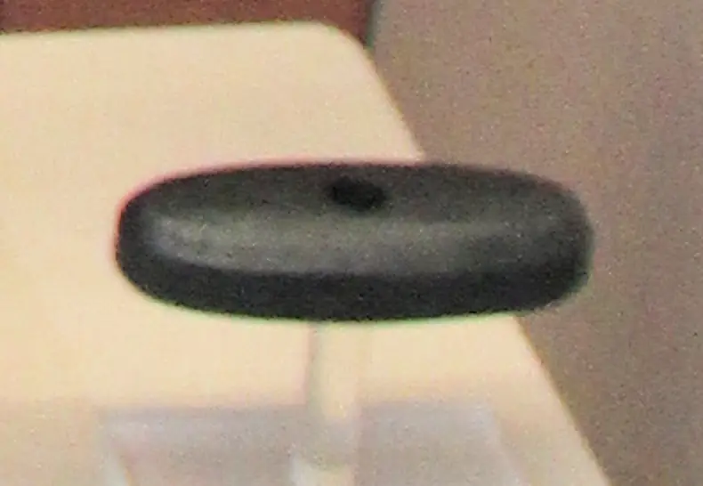
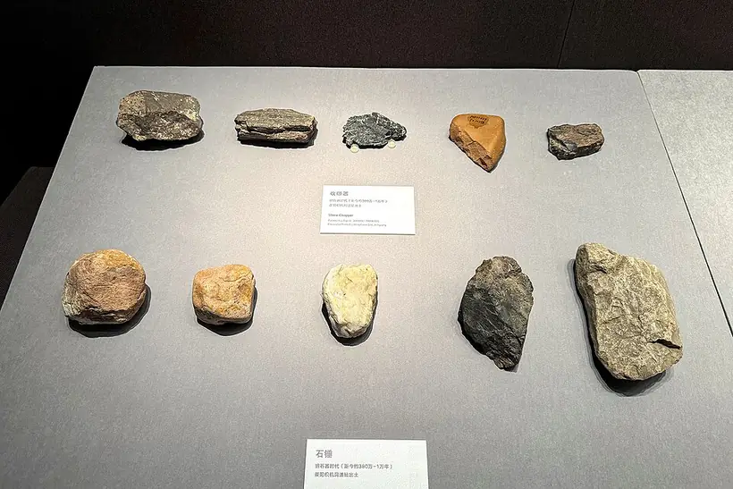
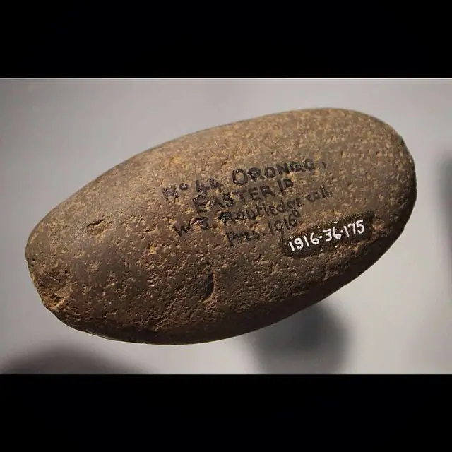

The claim
In 1936 a couple near London, Texas, found a hammer embedded in a rock nodule. The rock was identified as Ordovician limestone, around 400 million years old, and the object became a creationist exhibit: evidence that humans existed before the geological column says they did.
Maps, diagrams and images






The analysis
The hammer is a nineteenth-century pattern: a cast-iron head with a specific shape used by masons and miners, and a wooden handle of modern species. The 'rock' is a concretion — a mass of limestone that forms around an object left in lime-rich sediment or water, which can happen in decades. The handle has been dated and is recent; the iron is consistent with nineteenth-century manufacture.
The creationist literature has argued that the encasing rock is Ordovician, which would require the object to be that old. Concretions are exactly the mechanism by which recent objects end up inside old-looking rock, and the identification of the surrounding limestone does not date the object inside it.
Documented: the object, its find, and its nineteenth-century pattern.
Documented: concretions form around recent objects in lime-rich settings.
Documented: the handle is recent wood.
Not established: an Ordovician age for the hammer.
Why the label is debunked: the object is a known modern tool, and the mechanism that explains its position is well understood.
Why it is in the archive
Because it is the archive's clearest case of a geological mechanism being mistaken for a date, and because the mistake is instructive: the rock is old, the hammer is not, and the concretion is the sentence that joins them.
Open resources on this topic
- PapersOpen-access articles: DOAJ · PubMed Central · Internet Archive Scholar
- BooksPublic-domain and borrowable copies: Open Library · Project Gutenberg · Google Books · Internet Archive
More images
Cite this page
Momin, S. (2026). The London Hammer. The Larger World Archive. https://drsamonline.github.io/LARGE_GLOBE/london-hammer.htmlMomin, Sohil. “The London Hammer.” The Larger World Archive, 2026, https://drsamonline.github.io/LARGE_GLOBE/london-hammer.html.Momin, Sohil. “The London Hammer.” The Larger World Archive, 2026. https://drsamonline.github.io/LARGE_GLOBE/london-hammer.html.@misc{the2026london,
author = {Momin, Sohil},
title = {The London Hammer},
year = {2026},
howpublished = {The Larger World Archive},
url = {https://drsamonline.github.io/LARGE_GLOBE/london-hammer.html},
note = {Last reviewed 20 November 2026}
}Last reviewed 20 November 2026 · Corrections policy · this page is not peer reviewed
Sources for this page
- Wikipedia, “London Hammer” — the object and the analysisen.wikipedia.org
- Wikipedia, “Concretion” — how recent objects end up in old rocken.wikipedia.org
- Wikipedia, “Out-of-place artifact” — the genreen.wikipedia.org
- Wikipedia, “Creation science” — the movement that promotes iten.wikipedia.org